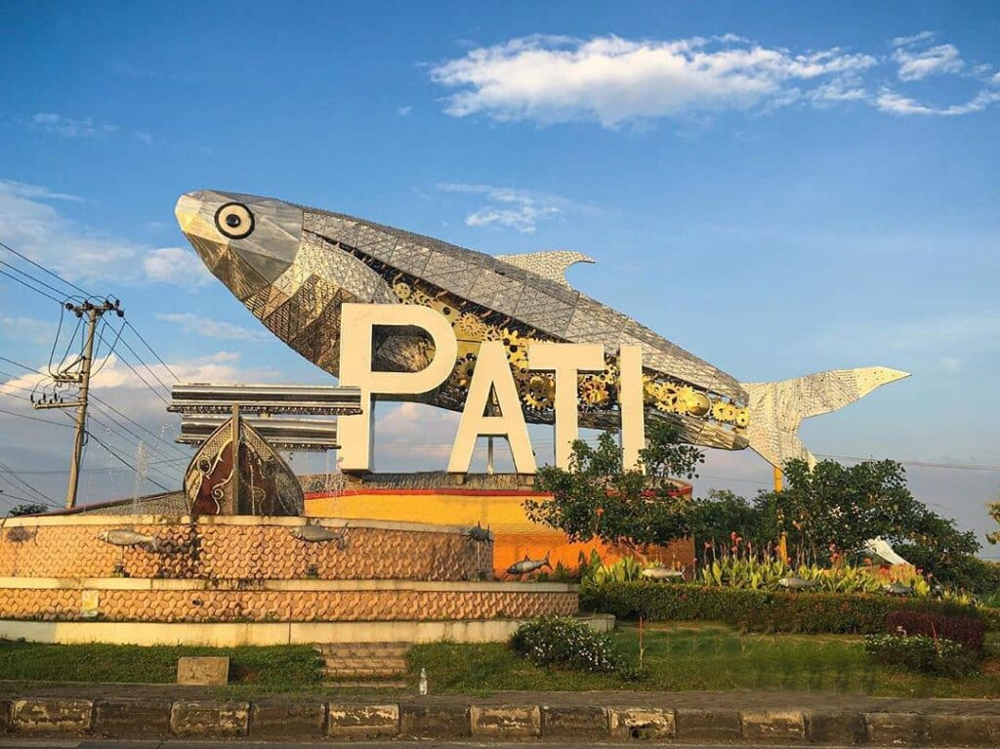

Profil
Nama saya Jolang Alif Khan, saya lahir di Pati, 25 Januari 2006. Saat ini saya berusia 19 tahun. Saya adalah seorang mahasiswa aktif di Universitas Dian Nuswantoro, jurusan Sistem Informasi. Saya memiliki minat yang besar dalam bidang teknologi dan pengembangan perangkat lunak. Selain itu, saya juga senang berolahraga, terutama sepak bola dan berenang. Di waktu luang, saya suka membaca buku-buku tentang teknologi dan mengikuti perkembangan terbaru di dunia IT.
Saya bercita-cita untuk menjadi seorang profesional di bidang teknologi informasi, khususnya dalam pengembangan aplikasi dan sistem yang dapat memberikan dampak positif bagi masyarakat. Saya percaya bahwa dengan kerja keras dan dedikasi, saya dapat mencapai tujuan tersebut.
Tentang Kota Kelahiran Saya:
Pati adalah sebuah kabupaten di Provinsi Jawa Tengah, Indonesia. Kota ini terletak di bagian utara provinsi dan berbatasan dengan Laut Jawa di sebelah utara. Pati dikenal sebagai salah satu daerah penghasil padi terbesar di Jawa Tengah, sehingga sering dijuluki sebagai "Lumbung Padi" di wilayah tersebut. Selain pertanian, Pati juga memiliki potensi dalam sektor perikanan dan industri kecil. Kabupaten ini memiliki berbagai objek wisata menarik, seperti Pantai Juwana yang menawarkan pemandangan laut yang indah dan berbagai aktivitas rekreasi. Pati juga kaya akan budaya dan tradisi lokal, dengan berbagai acara adat yang masih dilestarikan oleh masyarakat setempat.
Informasi detail tentang Kota Pati: Klik disini
Pendidikan
Berikut adalah riwayat pendidikan saya dari tingkat dasar hingga perguruan tinggi:
- SMPN 1 Gabus (2015-2018)
- SMK RADEN UMAR SAID KUDUS (2018-2021)
- Universitas Dian Nuswantoro (2024-Sekarang)
Karir
Saat ini, saya masih fokus pada studi saya di Universitas Dian Nuswantoro dan belum memiliki pengalaman kerja profesional. Namun, saya aktif terlibat dalam berbagai proyek akademik dan kegiatan organisasi di kampus yang membantu saya mengembangkan keterampilan praktis di bidang teknologi informasi.
Saya berencana untuk mencari peluang magang atau kerja paruh waktu di bidang IT selama masa studi saya untuk mendapatkan pengalaman kerja yang berharga dan memperluas jaringan profesional saya.
Galeri Kota Pati
Silahkan Isi Data Anda Disini
Hobby dan Keahlian
Hobby:
- Sepak Bola
- Mendaki Gunung
- Traveling
- Scroll Sosmed
Keahlian:
- Pengembangan Web (HTML, CSS, JavaScript)
- Analisis Sistem Informasi
- Problem Solving dan Pemrograman